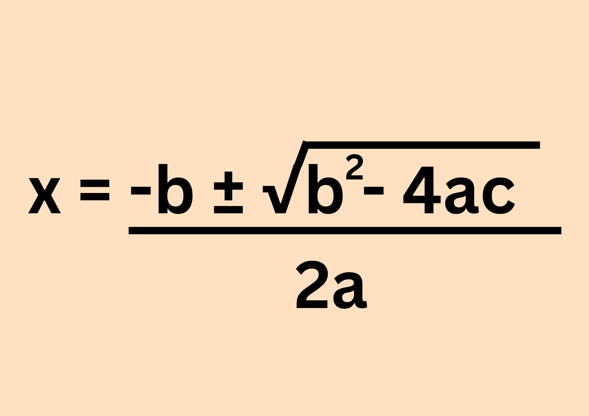
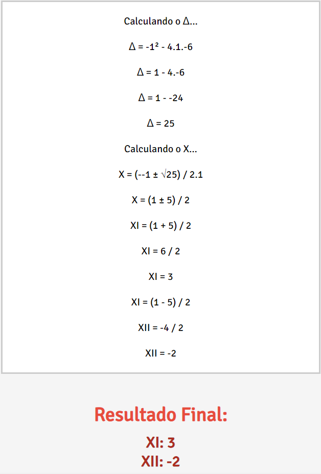
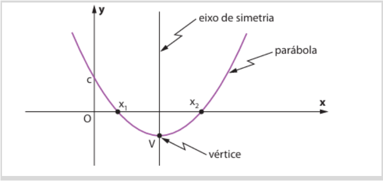
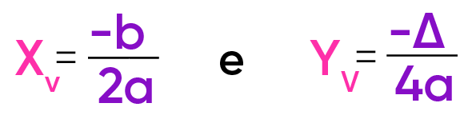
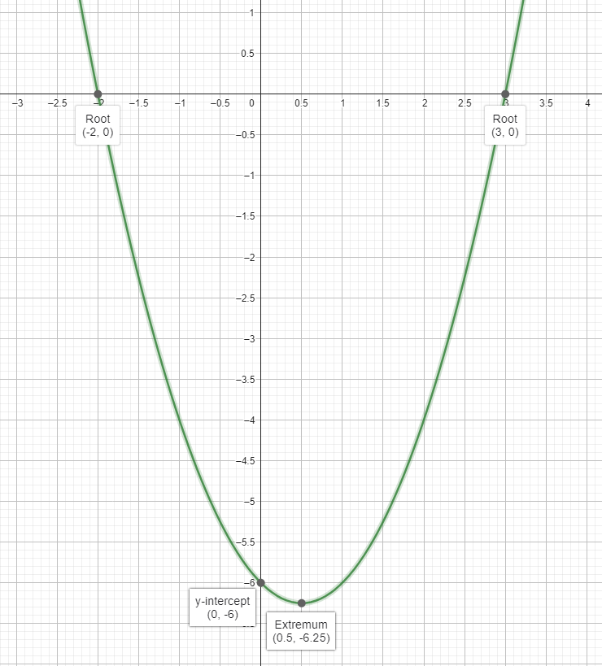

Também aprendi este conteúdo com bastante facilidade pois já havia estudado nos anos anteriores sobre. Apenas tenho dificuldade na hora de fazer a Bhaskara, as vezes posso trocar sinais, em alguns casos o delta acaba ficando negativo, etc.
O formato das funções quadráticas é: ax2 + bx + c = 0, sendo a, b e c números reais.
Por exemplo, a função f(x) = x2 - x - 6 = 0.
Neste conteúdo foram estudados os seguintes conteúdos:
Para calcular as raízes (x quando o resultado da equação é 0), podemos usar Bhaskara:
Resolvendo a função de antes com bhaskara (f(x) = x2 - x - 6 = 0):
Existem alguns pontos em um gráfico de função quadrática:
Para começar, o valor A é o que define se a parábola é voltada para cima ou para baixo. Caso o A seja positivo, a parábola é voltada para cima, caso contrário, é voltada para baixo.
Os pontos que intersecionam o eixo X são as raízes da função. Caso a função tenha apenas uma raíz, irá tocar no eixo X apenas uma vez, e caso não tenha raízes, não tocará o eixo X em momento algum.
O ponto que interseciona o eixo Y é o valor C da equação.
E por fim, o vértice é encontrado com duas fórmulas: uma para o X e outra para o Y.
Lembre que delta é: b2 - 4ac
Após encontrar o X do vértice e Y do vértice, apenas marque no gráfico o vértice, as raízes e o ponto que a parábola toca o eixo Y (c) e desenhe o gráfico.
Aqui um exemplo com a função f(x) = x2 - x - 6 = 0
Como podemos ver, as raízes estão intersecionando o eixo X, o valor C toca o eixo Y e o vértice está entre as raízes.